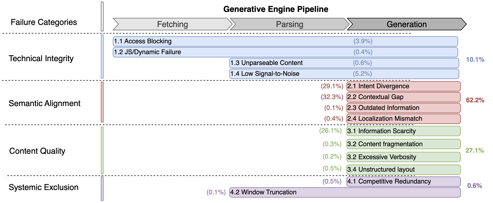

Method
We constructed a diagnostic dataset of 949 contrastive pairs from GEO-Bench, each pairing a non-cited webpage with a cited competitor for the same query. Analysis reveals four failure dimensions:

Technical Integrity (10.1%)
Access blocking, JS rendering failures, unparseable content, low signal-to-noise ratio from boilerplate.
Semantic Alignment (62.2%)
Intent divergence, contextual gaps, outdated information, localization mismatch between content and query.
Content Quality (27.1%)
Information scarcity, content fragmentation, excessive verbosity, unstructured layout.
Systemic Exclusion (0.6%)
Competitive redundancy and context window truncation — barriers no optimization can overcome.
AgentGEO operates in an iterative diagnose-then-repair loop. For each training query where a target webpage is not cited:
- Failure Diagnosis: Simulate the GE pipeline, compare against cited competitors, classify the vulnerability using our taxonomy.
- Tool Selection with Memory: Select a repair tool based on the diagnosed vulnerability. A query-specific memory tracks prior attempts to avoid repeating ineffective repairs.
- Iterative Refinement: Apply the tool, check if citation is achieved. If not, re-diagnose and iterate.
- Batch Aggregation: Aggregate suggestions across training queries to produce updates that generalize across diverse query intents.

Existing benchmarks pair each document with a single query — risking query-specific overfitting. MIMIQ (Multi-Intent Multi-Query) treats the document as the unit of optimization:
- Multiple queries per document spanning diverse intents, personas, and phrasings.
- Methods optimize on training queries and are evaluated on held-out test queries.
- This tests whether optimization produces genuinely more citable content — not just overfitting to specific query formulations.